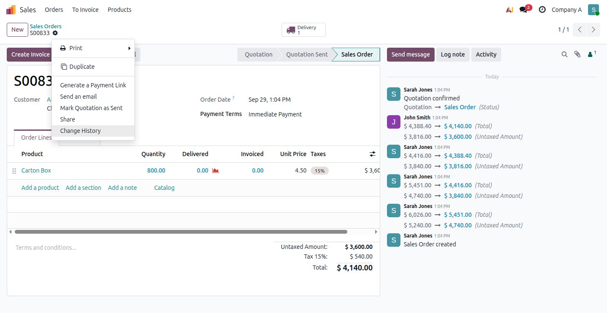
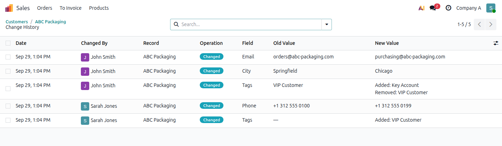
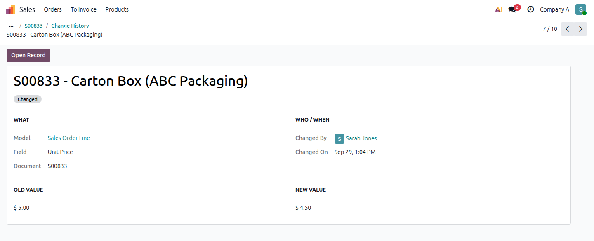
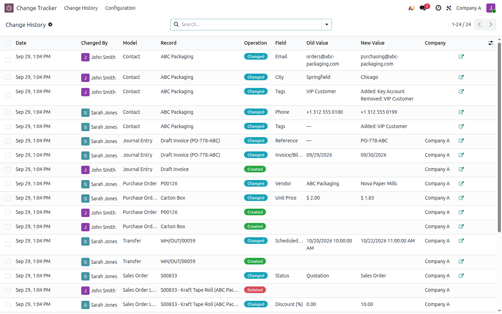
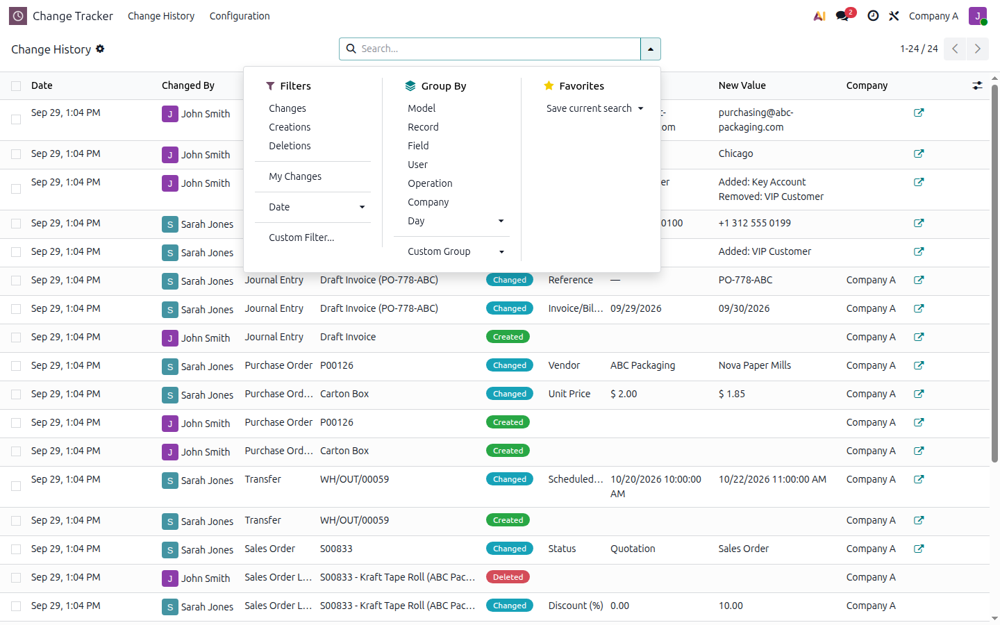
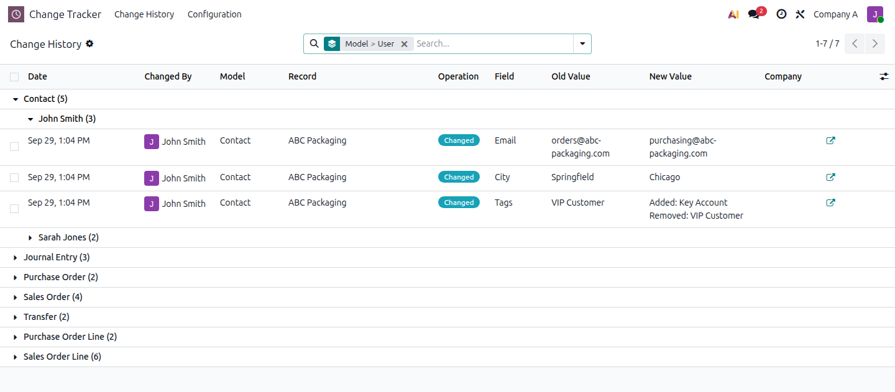
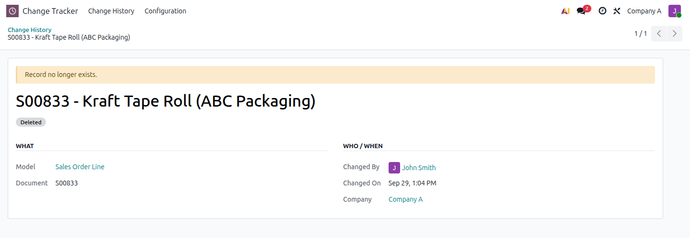
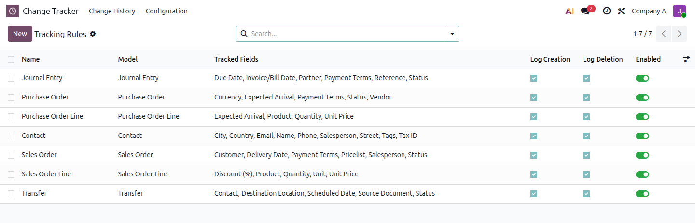
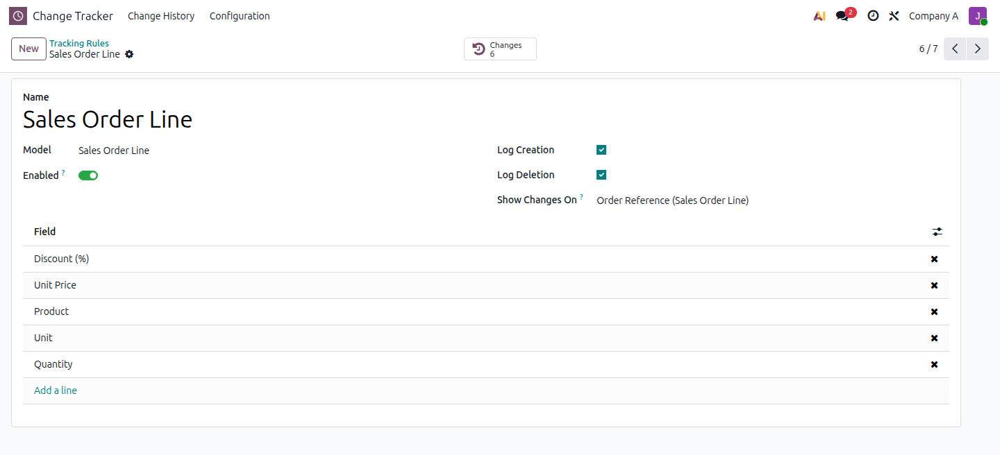
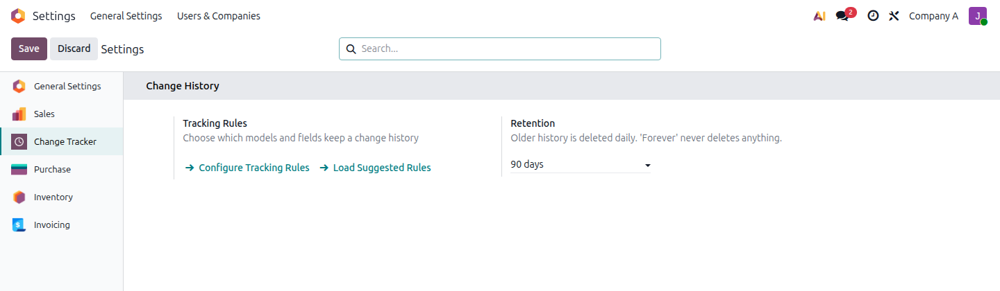

Designed for managers and business users, not only for developers.
The field, shown by its label (Unit Price, Delivery Date), and the document or line it belongs to.
The real user, even for changes made through sudo(), imports or automated actions.
The exact date and time, displayed in each viewer's own timezone and date format.
$ 5.00 → $ 4.50, ABC Packaging → XYZ Corp, Quotation → Sales Order. Never 7 → 12.
Odoo's chatter shows some changes, but only for fields developers flagged in code, only on documents that have a chatter, and mixed in with messages. On an order, it shows the total moving from $ 5,451 to $ 4,416 but not which line changed, what price, or who did it. Business Change Tracker keeps working alongside chatter and fills those gaps.
Open any tracked record, such as a sales order, purchase order, invoice, contact, transfer or your own custom model, and choose ⚙ Actions → Change History. Nothing to install per app and no form customisation: the entry appears automatically as soon as a tracking rule is enabled, in both form and list views.

The history of an order also lists the changes of its order lines: unit price, quantity, discount, product, including lines that were deleted. Each row shows the date, the user, the field, and the old and new values.
Every field type is displayed the way users see it in Odoo. Names are captured at the moment of the change, so the history stays readable even after the related record is renamed or deleted.
| Field type | Database value | What the user sees |
|---|---|---|
| Many2one | 7 → 12 | ABC Packaging → XYZ Corp |
| Selection | draft → sale | Quotation → Sales Order |
| Price / Monetary | 5.0 → 4.5 | $ 5.00 → $ 4.50 (document currency) |
| Integer / Float | 1000 → 800 | 1,000 → 800 with the field's precision and the user's number format |
| Date | 2026-10-10 | 10/10/2026 in the user's date format |
| Datetime | 2026-10-10 04:30 UTC | 10/10/2026 10:00 AM in the viewer's timezone |
| Boolean | False → True | No → Yes |
| Many2many (tags…) | [3] → [5] | Added: Key Account Removed: VIP Customer |
| HTML | <p>Hello</p> | Hello, converted to safe plain text (no script injection) |
| Char / Text | very long text | kept up to 2,000 characters, then truncated with "…" |
| Empty value | False | — |

Contact history: tags added / removed, phone, email, city

One change in detail, with Open Record navigation
Change Tracker → Change History lists every business change in one place. Use it to answer questions like "who changed prices this week?", "what did this user modify yesterday?" or "which documents were deleted?".

By record or document name (for example S00833 also finds its lines), field, user, model, company, and even by old or new value ("who set this email?").
Changes, Creations, Deletions, My Changes, and any date period (today, this week, this month, a custom range).
Model, Record, Field, User, Operation, Company and Day, with nested groups such as Model › User.


Deleted records. When a record is deleted, a Deleted entry keeps its name, its parent document, the user and the time. Its history stays available. The entry clearly shows "Record no longer exists.", and the module never pretends it can rebuild the deleted record.
Changes Odoo makes on its own. Some values change without anybody typing them. For example, changing the customer of an order resets its payment terms and pricelist. Those automatic changes are recorded as well, with the user whose action caused them.
Creations. Optionally log a Created event for each new record.

Nothing is tracked until you enable it. A tracking rule is simply a model plus the business fields you care about. No code, no server restart: changes to rules apply immediately on every worker.


Suggested rules are created only for the apps installed in your database. Any other model, including models from your own custom modules, can be tracked the same way.
| Document | Suggested tracked fields |
|---|---|
| Sales Order | Customer, Salesperson, Delivery Date, Payment Terms, Pricelist, Status |
| Sales Order Line (shown on the order) | Product, Quantity, Unit Price, Discount, Unit |
| Purchase Order | Vendor, Expected Arrival, Payment Terms, Currency, Status |
| Purchase Order Line (shown on the order) | Product, Quantity, Unit Price, Expected Arrival |
| Invoice / Journal Entry | Partner, Invoice Date, Due Date, Payment Terms, Reference, Status |
| Contact | Name, Email, Phone, Tax ID, Street, City, Country, Tags, Salesperson |
| Transfer | Contact, Scheduled Date, Source Document, Destination Location, Status |
History is audit evidence. It follows Odoo's own security everywhere, so you don't have to maintain a second set of permissions.
A history entry is visible only to users who can read the underlying record, respecting access rights and record rules. A salesperson limited to "own documents" doesn't see the history of colleagues' orders.
If a field is restricted to certain groups, users outside those groups see Restricted instead of the old and new values.
Each entry belongs to the record's company. Users only see the companies they are allowed in. Shared records (without a company) remain visible to all companies.
Nobody can create, edit or delete history entries, not even an administrator, from the interface or the API. The only deletion path is the retention policy you configure.
User: sees the history of records they can read.
Manager: also configures rules and sees the history of deleted records.
History is saved in the same transaction as the business change. If the operation fails and rolls back, no false history entry remains.
| Change made through | Recorded | "Changed By" |
|---|---|---|
| Form and list views (incl. inline order lines) | ✓ | the user |
| List multi-edit / batch updates | ✓ one entry per record | the user |
| Import (Excel / CSV) | ✓ only rows that really changed | the importing user |
| Automated actions | ✓ | the user who triggered it |
| Scheduled actions | ✓ | the scheduled action's user |
Server code, sudo(), API / XML-RPC | ✓ | the real user |
| Saving without changing anything | nothing (no noise) | – |
Keep history Forever (default), or for 30, 90, 180 or 365 days. A daily scheduled action removes older entries:

* Measured on PostgreSQL 18 with 100,000 history entries. Your figures depend on your hardware and data.
Install the app. Suggested rules for your installed apps are created (disabled).
Go to Change Tracker → Configuration → Tracking Rules and review the fields.
Switch Enabled on, and give users the Change Tracker / User group.
Edit a document, then open ⚙ Actions → Change History. Done.
We'd rather be clear up front than surprise you later:
57 automated tests, plus 35 end-to-end scenarios with users of different rights across 2 companies, and a real-browser check of every screen.
Uses standard Odoo inheritance: no changes to Odoo's source code and no patches. Odoo's own Sales and Purchase test suites run with every rule enabled.
No leftovers: menus, actions, groups and tables are removed when you uninstall. Translation template included.
Contact us through the Odoo Apps Store contact form on this page.